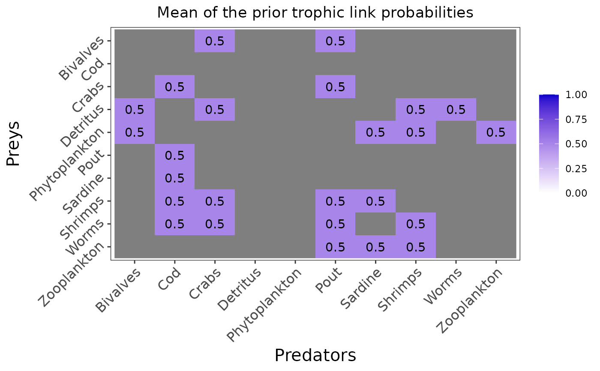
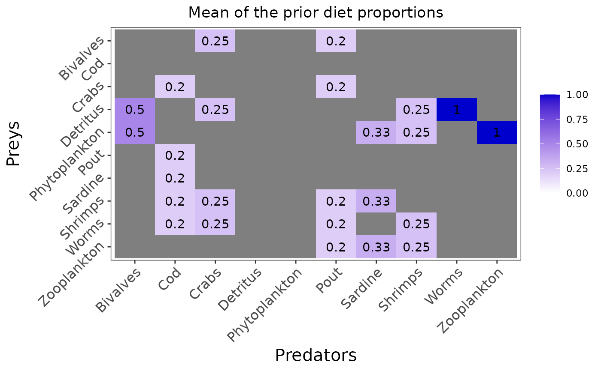
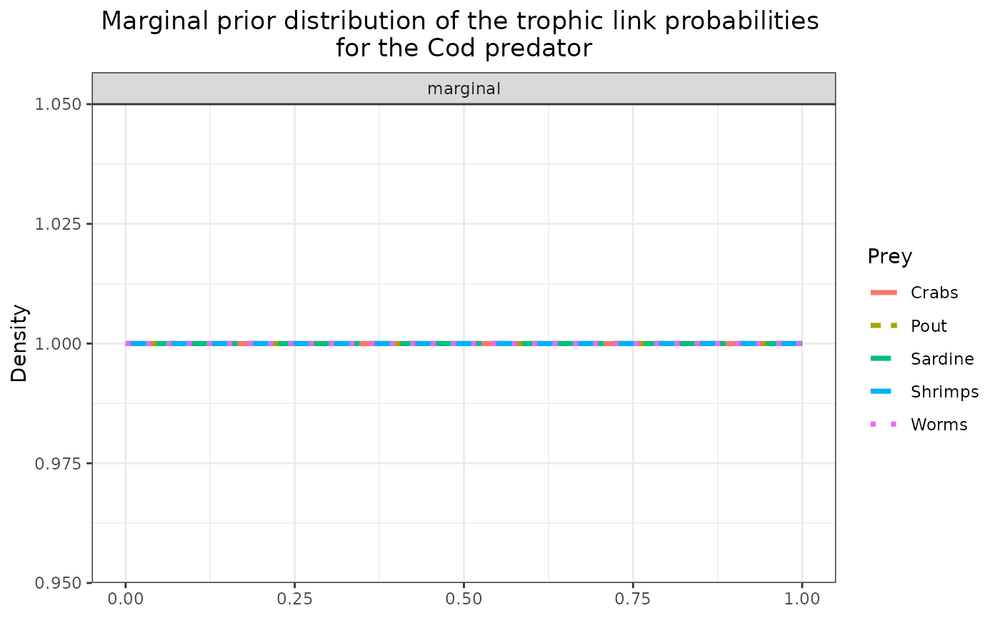
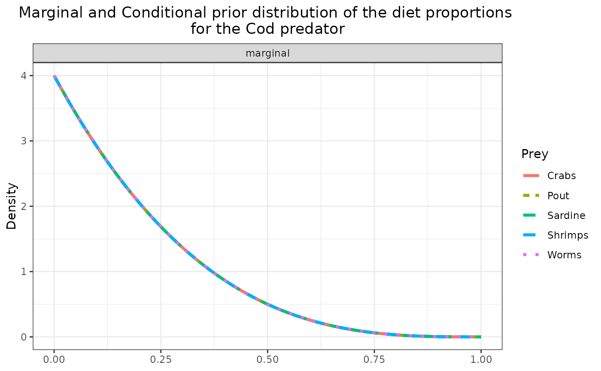
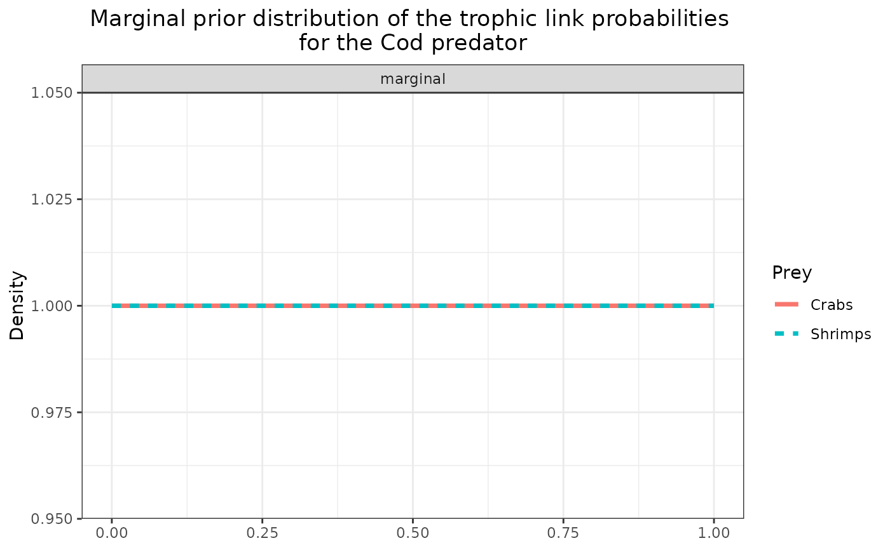

This function plots the prior means or probability distribution(s) for one or the two variable(s) of interest : the trophic link probabilities ("eta") and/or the diet proportions ("PI").
The figure(s) can be saved as PNG using: save = TRUE, and the directory path to which
the figures are saved can be precised with: save_path = ".".
If no "pred" nor "prey" parameter is entered, the plot will be a raster plot with the mean priors for all the trophic groups.
If one predator name is entered as "pred", the probability distribution(s) will be plotted for all its prey(s) by default. Some specific prey(s) name(s) can also be entered because if a predator has 22 preys, plotting them all will make the plot hard to read. So you can specify the one or many prey(s) of interest and only display their corresponding probability distribution(s).
The "variable" parameter can be specified if one wants to plot the priors for only one variable ("PI" or "eta").
plot_prior(
data,
literature_configuration,
pred = NULL,
prey = NULL,
variable = c("eta", "PI"),
save = FALSE,
save_path = "."
)the preprocessed data list output by the preprocess_data() function
A boolean (TRUE or FALSE) indicating whether the model will have prior distributions informed by a literature study
the predator name for which we want to plot the probability densities
the prey(s) name(s) for which we want to plot the probability densities
the variable(s) for which we want to plot the probability densities. By default we will plot the two variables of interest: eta and PI.
A boolean describing whether the figure should be saved as PNG. By default the figures are not saved.
A string describing the path to which the figures should be saved. By default the figures are saved in a temporary directory.
plot_results to plot the posterior means or probability distribution(s),
plot_data to plot the input data
realistic_biotracer_data <- read.csv(system.file("extdata", "realistic_biotracer_data.csv",
package = "EcoDiet"))
realistic_stomach_data <- read.csv(system.file("extdata", "realistic_stomach_data.csv",
package = "EcoDiet"))
data <- preprocess_data(biotracer_data = realistic_biotracer_data,
trophic_discrimination_factor = c(0.8, 3.4),
literature_configuration = FALSE,
stomach_data = realistic_stomach_data)
#> The model will investigate the following trophic links:
#> Bivalves Cod Crabs Detritus Phytoplankton Pout Sardine Shrimps
#> Bivalves 0 0 1 0 0 1 0 0
#> Cod 0 0 0 0 0 0 0 0
#> Crabs 0 1 0 0 0 1 0 0
#> Detritus 1 0 1 0 0 0 0 1
#> Phytoplankton 1 0 0 0 0 0 1 1
#> Pout 0 1 0 0 0 0 0 0
#> Sardine 0 1 0 0 0 0 0 0
#> Shrimps 0 1 1 0 0 1 1 0
#> Worms 0 1 1 0 0 1 0 1
#> Zooplankton 0 0 0 0 0 1 1 1
#> Worms Zooplankton
#> Bivalves 0 0
#> Cod 0 0
#> Crabs 0 0
#> Detritus 1 0
#> Phytoplankton 0 1
#> Pout 0 0
#> Sardine 0 0
#> Shrimps 0 0
#> Worms 0 0
#> Zooplankton 0 0
plot_prior(data, literature_configuration = FALSE)


plot_prior(data, literature_configuration = FALSE, pred = "Cod")


plot_prior(data, literature_configuration = FALSE, pred = "Cod",
prey = c("Crabs", "Shrimps"), variable = "eta")
